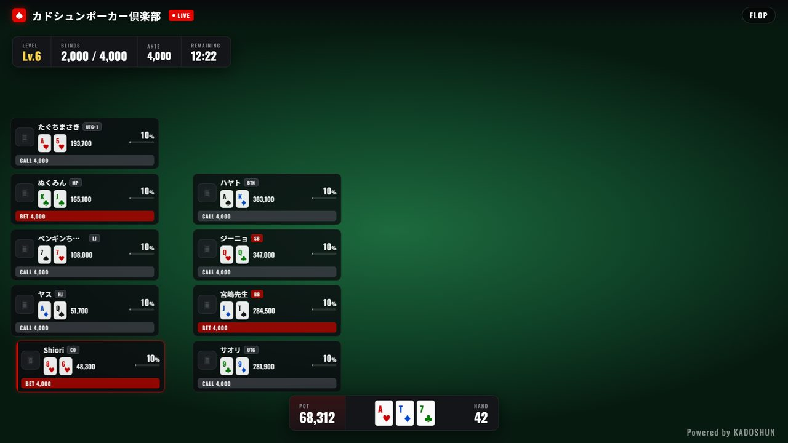

SCENE
CHAMPION
OPTIONS
OBS
配信用パソコンの OBS に登録する URL（ブラウザソース・幅1920・高さ1080）
このコントロール画面のURL（ブックマーク・スマホ用）
2つのURLには同じ合言葉（key）が入っています。合言葉を知っている人は帯を操作できるので、スタッフ以外に教えないでください。
作り直しました。OBS のブラウザソースの URL も新しいものに差し替えてください。
KEY
この端末の合言葉
スマホでQRコードを読み取ると、同じ合言葉でこの画面が開きます。